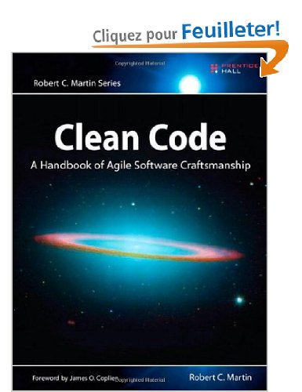
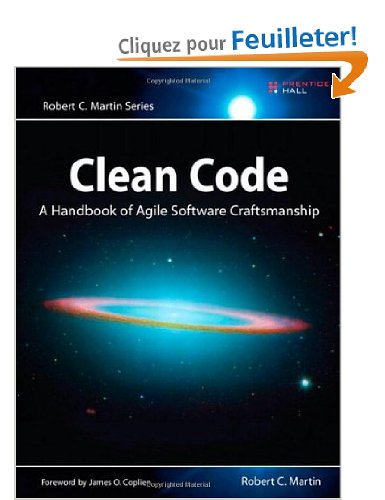
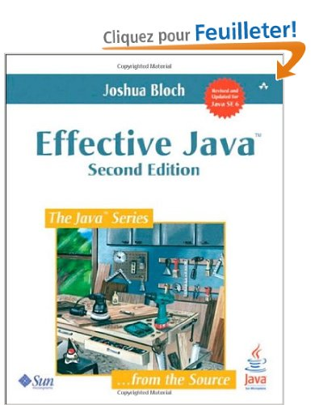
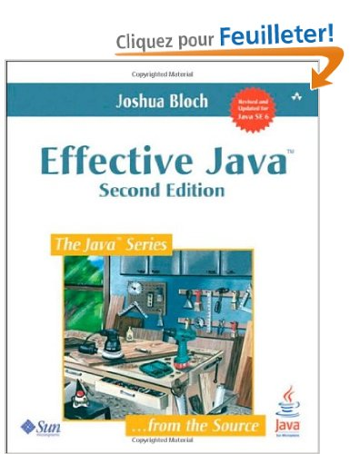

Whatever luck I had, I made. I was never a natural athlete, but I paid my dues in sweat and concentration and took the time necessary to learn Karate and become World Champion.
A chaque niveau, on étend le périmètre du test.
 http://xunitpatterns.com/Test%20Double.html
http://xunitpatterns.com/Test%20Double.html
Le plus simple, une dépendance nécessaire pour notre objet testé mais ne représente pas vraiment d'interaction
Implémentation simple et rapide d'une dépendance. Exemple : repository
public class FakeRepository implements Repository<T>{
private Map<Long, T> map = new HashMap<Long, T>();
public T save(T one){ return map.put(one.getId(), one); }
public T findOne(Long id){return map.get(id);}
public Iterable<T> findAll(){return map.values();}
public void delete(Long id){map.remove(id);}
}
public void testActiveWhenCollaboratorIsActive() throws Exception {
Service service = new SimpleService();
service.setCollaborator(new StubCollaborator());
assertTrue(service.isActive());
}
...
class StubCollaborator implements Collaborator {
public boolean isActive() {
return true;
}
}
public void testActiveWhenCollaboratorIsActive() throws Exception {
Collaborator mockCollaborator = mock(Collaborator.class);
when(mockCollaborator.isActive()).thenReturn(true);
SimpleService service = new SimpleService();
service.setCollaborator(mockCollaborator);
assertTrue(service.isActive());
}
public void testActiveWhenCollaboratorIsActive() throws Exception {
Collaborator spyCollaborator = spy(new SimpleCollaborator()); // real object
SimpleService service = new SimpleService();
assertTrue(service.isActive());
verify(spyCollaborator, times(1)).isActive(); // interaction verification
}

 

 
